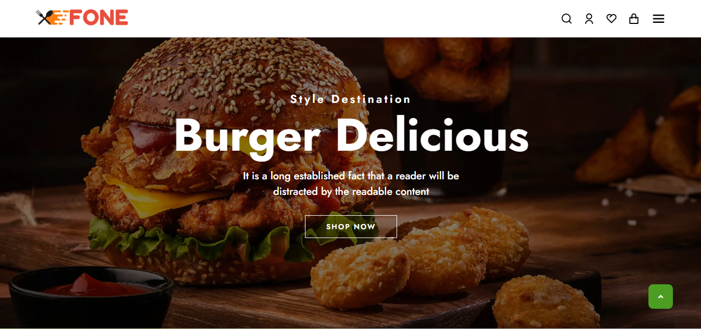
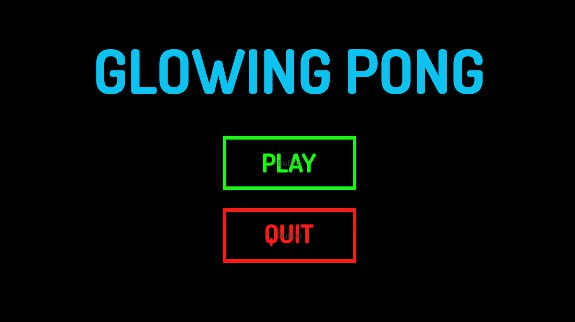

Web Design
I work in crafting visually appealing and functional web designs tailored to align with your brand and meet user needs. My experience includes redesigning various websites, including the one highlighted above.
Learn more
I work in crafting visually appealing and functional web designs tailored to align with your brand and meet user needs. My experience includes redesigning various websites, including the one highlighted above.
Learn more
I have been exploring web development within Unity using a programming language C# and recently redeveloped a game called Glowing Pong, a two-player arcade game where each player controls a paddle to keep the ball from passing through. I am continuously learning and expanding my skills in game development using Unity, and I am confident that I will create more engaging and educational games in the future.
Learn moreAs a student, I have gained diverse experience in project management. I served as the coordinator for the Frontend Development course during the GDG AAU Summer Bootcamp 2024/25. Additionally, I am actively involved in project management activities at the AAiT Innovation Center and currently serve as the organizer of GDG AAU, where I oversee various initiatives and events.
Learn more{kind=link}